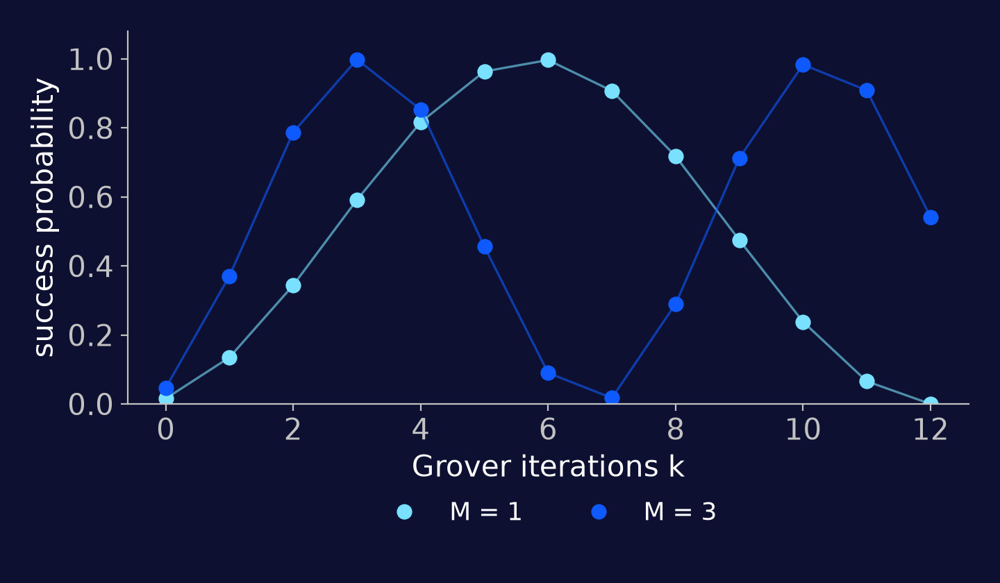
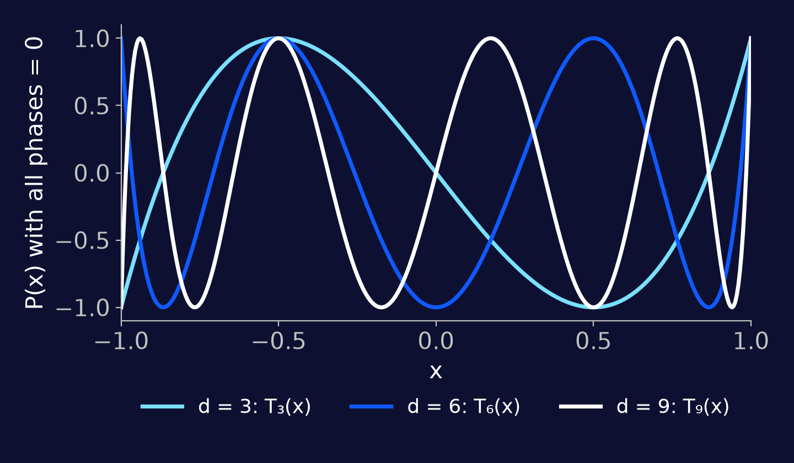
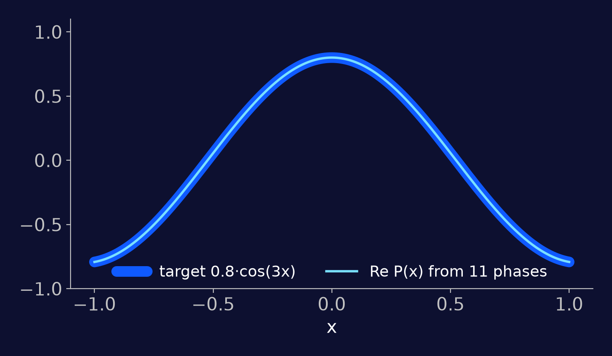
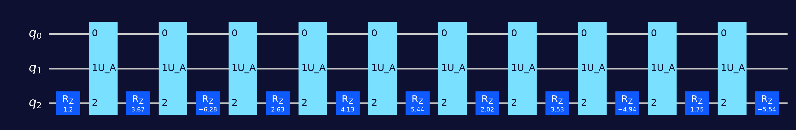
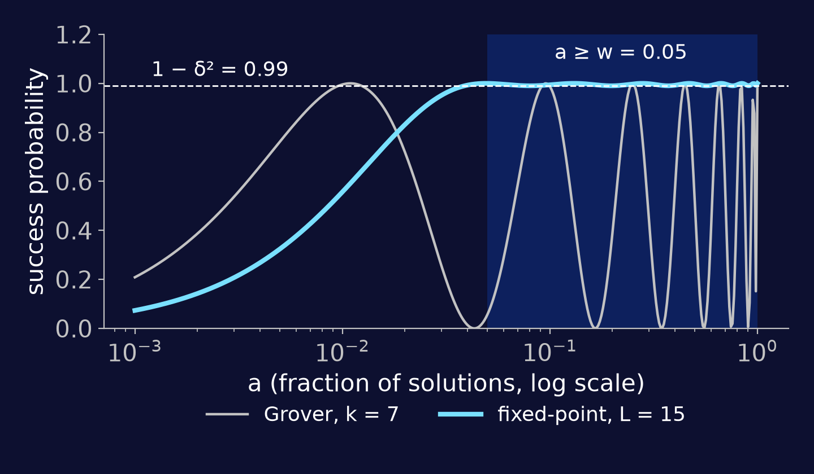
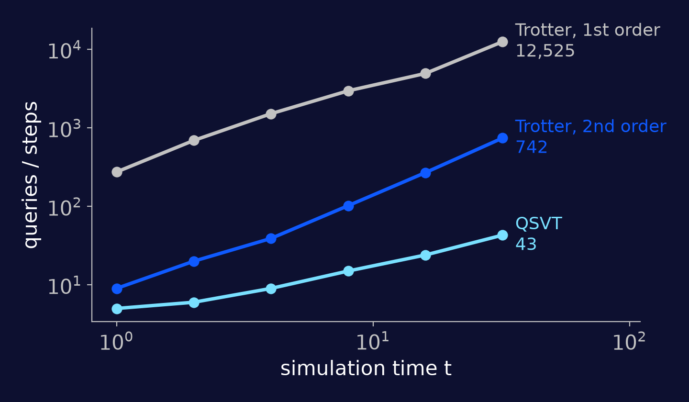
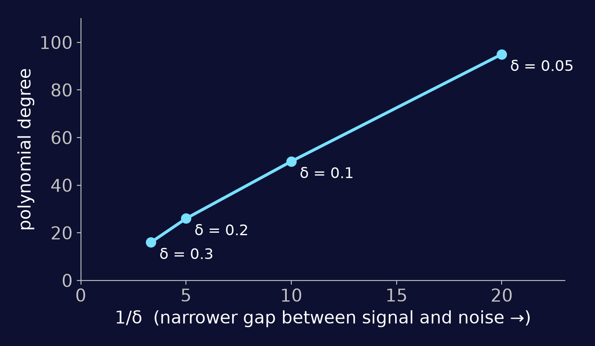

Rebuilding quantum algorithms, and what they mean for big data
[Team name] · Advisor: [Title. Full name]
Big Data course · Ho Chi Minh City University of Technology (HCMUT) · Nov 2026
entries in a 10⁶-user × 10⁶-item rating matrix
Least squares: solve β = X⁺y.
Keep the largest singular values of X.
Sample from a low-rank approximation of the ratings.
Find the marked rows among N records.
RQ0: which math is enough for QSVT?
Deutsch–Jozsa, Grover, QFT, phase estimation
RQ1: rotations, polynomials, whole matrices
RQ2–RQ3: degrees and comparisons
RQ4: what QSVT buys a data system
Which math is enough to understand QSVT?
| Topic | Used by QSVT | Covered in |
|---|---|---|
| Spectra, SVD, f(A) | A3 | |
| Reflections, SU(2) | A4, A5 | |
| Measurement | Indirectly | A5, Demo 2 |
| Density matrices | No | A6 |
| Channels, distance | No | A7, A8 |
Global phase is invisible; relative phase is measurable.
Qubit 0 is the rightmost bit; a Bell state has rank 2.
f(A) = Σ f(λ)|v⟩⟨v|: apply f to the eigenvalues.
A = Σ σ|u⟩⟨v|; QSVT transforms the σ.
eiθ n·σ = cos θ·I + i sin θ·n·σ.
Qubit 0 is the rightmost bit; the ancilla takes the highest index.
eiφZ = RZ(−2φ). A wrong sign breaks all of QSP.
Matrix products read right to left, so gates are appended in reverse.
Born rule: p(m) = ⟨ψ|Πm|ψ⟩. With a block-encoding:
ρ ⪰ 0, tr ρ = 1; purity tr ρ² lies in [1/d, 1].
Tracing out half a Bell pair leaves I/2.
Schmidt rank via SVD; Werner state entangled iff p > 1/3.
Kraus maps: bit-flip, dephasing, depolarizing, amplitude damping.
Helstrom: the best single measurement tells ρ from σ with probability ½ + ½·D(ρ, σ). For |0⟩ and |+⟩ that is cos²(π/8) ≈ 0.854. No channel can increase the trace distance D.
If ‖U − V‖ ≤ ε, every measured probability moves by at most ε, so T gates each off by ε cost at most Tε. This turns a QSVT polynomial error into a measurement error.
Before QSVT: the four algorithms it will absorb
Deutsch–Jozsa: 1 query vs 2n−1 + 1, via phase kickback.
Two reflections rotate by 2θ; k* ≈ (π/4)√(N/M).
The normalised DFT, built from n(n+1)/2 gates plus swaps.
Nearest value with probability ≥ 4/π²; amplitude estimation error ~1/M.

N = 64. Dots: statevector; lines: sin²((2k+1)θ). Demo 0, cells 3–4.
largest gap to the formula, M = 1
measured on Aer at k* = 6 (theory 0.9966)
Past k*, the probability falls again: Grover overshoots.
Why do rotations give polynomials, even for matrices?
W(x) = ei arccos(x) X. The QSP theorem is stated this way, and zero phases give Td.
R(x) is a reflection, used by block-encodings. R = −i·eiπZ/4·W·eiπZ/4: only a global phase apart.

All phases 0 gives P(x) = cos(d·arccos x) = Td(x). Demo 1, cell 2.
largest error for d = 3, 6, 9
This is the first test for any QSP code, before finding phases.
| Target | Range | Degree | Grows as |
|---|---|---|---|
| cos(tx), ε = 10⁻⁶ | t = 1 … 32 | 6 → 48 | ≈ 1.5t |
| Smoothed 1/x, ε = 10⁻³ | κ = 2 … 32 | 27 → 427 | ≈ 13.3κ |
| Step, ε = 10⁻² | δ = 0.3 … 0.05 | 16 → 95 | ≈ 5/δ |
| Check first | max|p| on 4,001 points | must be ≤ 1 | Chebyshev can overshoot |
Fit on Chebyshev nodes: 11 phases in 5 s.
Optimisation (Dong et al. 2021), degree above 10,000.
Factorisation: exact, but needs high precision.
Open-source library to cross-check our phases.
Motlagh–Wiebe 2024: drops the parity constraint.

Our own BFGS, 8 random starts, fitted on 11 Chebyshev nodes. Demo 1, cell 4.
max error for 0.8·cos(3x), degree 10
to find 11 phases on a laptop
max|f| = 0.8 ≤ 1, so the target is valid before fitting.
RQ1
Put together, the top-left block is P(A).
Each phase is RZ(−2φ) on the ancilla.
Add one qubit: multi-controlled NOT, RZ, then uncompute.
Products read right to left, so gates are appended in reverse.
Re P = ½(UΦ + U−Φ) by LCU: one more qubit, lower success.

3 qubits, ancilla q2: 10 calls to UA, 11 RZ(−2φ) gates. Matches the numpy matrix to 9.5·10⁻¹⁶.
| Check | Measured | Pass if |
|---|---|---|
| UA unitary | 3.8·10⁻¹⁵ | < 10⁻¹² |
| 2×2 block = R(λ) | ≤ 2.4·10⁻¹⁵ | < 10⁻¹² |
| QSVT vs f(A) | 1.2·10⁻⁶ | < 10⁻⁴ |
| Circuit vs numpy | 9.5·10⁻¹⁶ | < 10⁻¹⁰ |
| Ancilla = 0 on Aer | 0.5223 | 0.5217 ± 0.0106 (3σ) |
Which polynomial solves which problem?

Same 7 oracle calls each. Demo 3, cell 1; Yoder, Low, Chuang (2014).
for every a ≥ 0.05, without knowing a
Grover is QSP at x = √a with T2k+1. Change the polynomial, change the behaviour.

Random 8×8 H, ‖H‖ = 1, target error 10⁻³. Demo 3, cell 2.
QSVT queries at t = 32
first-order Trotter steps (second order: 742)
Jacobi–Anger gives degree O(t + log 1/ε), optimal by Low–Chuang (2017).
| κ (8×8 A) | Degree | Degree/κ | Error in x | P(success) |
|---|---|---|---|---|
| 2 | 27 | 13.5 | 8.5·10⁻⁴ | 0.160 |
| 4 | 53 | 13.3 | 1.6·10⁻³ | 0.096 |
| 8 | 107 | 13.4 | 2.0·10⁻³ | 0.065 |
| 16 | 213 | 13.3 | 1.7·10⁻³ | 0.037 |
| 32 | 427 | 13.3 | 2.1·10⁻³ | 0.021 |
A bug we really hit
max|g| ≈ 1.91. Always check |f| ≤ 1 before finding phases.
Minimum degree that approximates ORN, solved with linprog. Demo 3, cell 4; Nisan, Szegedy (1994).
almost constant as N grows 16 times
After T queries, probabilities are polynomials of degree ≤ 2T, so OR needs Ω(√N) queries.
| Algorithm | Polynomial | Degree | Old method | Measured |
|---|---|---|---|---|
| Fixed-point | YLC Chebyshev | O(log(1/δ)/√w) | Grover overshoots | ≥ 0.99 at L = 15 |
| Hamiltonian | cos(tx), sin(tx) | O(t + log 1/ε) | Trotter O(t²/ε) | 43 vs 12,525 |
| Linear systems | smoothed 1/(2κx) | O(κ log(κ/ε)) | HHL poly(1/ε) | ≈ 13.3κ |
| Eigen-filter | smoothed step | O((1/Δ)·log 1/ε) | QPE, Ω(1/Δ) | ≈ 5/δ (E11) |
| OR (lower bound) | approx. ORN | Θ(√N) | — | d/√N ≈ 0.7 |
Back to the 10¹²-entry matrix
| Task | Matrix job | Polynomial | Quantum | Classical |
|---|---|---|---|---|
| Search | mark M of N | T2k+1, fixed-point | O(√(N/M)) | O(N) |
| Statistics | estimate a mean | Grover + QPE | O(1/ε) | O(1/ε²) samples |
| Regression | β = X⁺y | smoothed 1/x | O(κ log κ/ε) | O(nd²) |
| PCA | project on σ > τ | smoothed step | O((1/δ) log 1/ε) | O(ndk) |
| Recommending | sample low rank | singular value filter | polylog(mn), QRAM | polylog too (Tang) |
The Hermitian dilation lets QSVT invert a non-square data matrix. Demo 4, cell 2.
relative error of β against numpy lstsq
degree at κ = 4 (27 at κ = 2, 107 at κ = 8)
X is 12×4, so H is 16×16: 4 qubits plus 1 ancilla.

An even polynomial ≈ step at τ = 0.5 keeps the 2 principal components. Demo 4, cell 3.
degree as the signal–noise gap δ shrinks
projector error at every δ
The same filter is the core of quantum recommendation systems.
The catch
So how does big data get in, and out?
QRAM block-encodings pay ‖A‖F/‖A‖: 16 for a random 1024×1024 matrix.
The answer is a state |x⟩; reading all N entries takes ≥ N runs.
Same sampling access lets classical methods match low-rank speedups (Tang 2018).
| Task | Classical | QSVT + QRAM | Dequantized |
|---|---|---|---|
| Regression | O(nd²) | ≈ κF log 1/ε, κF = ‖X‖F/σmin | poly(k, κ, 1/ε) if rank k |
| Recommending | O(mnk) truncated SVD | polylog(mn) | polylog(mn), higher-degree poly in k, 1/ε |
| Output | the full vector | a quantum state |x⟩ | samples of x |
Look for all of these at once:
QSVT trains linear algebra; Stage 0 adds measurement and noise.
Each eigenvalue has its own invariant 2D subspace.
1/√a, t + log 1/ε, κ log κ/ε; lower bounds match.
43 queries vs 12,525 Trotter steps; no QPE needed.
Regression and PCA work; loading and readout decide speedups.
What this project did not do:
Martyn et al., PRX Quantum 2 (2021) · Gilyén et al., STOC 2019 · Low, Chuang, PRL 118 (2017) · Yoder, Low, Chuang, PRL 113 (2014) · Dong et al., PRA 103 (2021) · Nisan, Szegedy (1994) · Nielsen, Chuang (2010)
Kerenidis, Prakash, ITCS 2017 · Tang, STOC 2019 · Chia et al., STOC 2020 · Aaronson, Nature Physics 11 (2015) · Montanaro, Proc. R. Soc. A 471 (2015) · Giovannetti, Lloyd, Maccone, PRL 100 (2008)
Questions?
[team email]
github.com/GitGud031005/fundamental-quantum
project/notebooks: the five demo notebooks